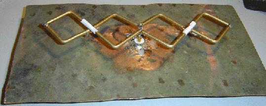
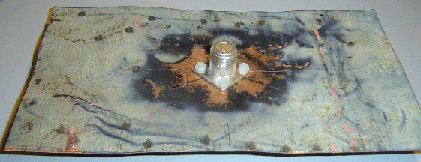
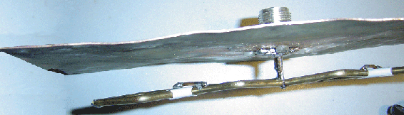

I don't know the real name for this antenna, but it is two BiQuads
end on end. It also seems to be an extremely forgiving design. I
made quite a mess of the construction and I'm getting 12dBi gain.
I did think I was getting none, but discovered that the
antenna is horizontally polarized when held vertically.
Misc Notes
I used 3.2mm (1/8") Mang-Bronze welding rods. These are really hard to bend and
the diamonds are quite small so made several smaller sections and soldered them together.
I put a bit of tape around the cross over point where the outer diamonds meet the inner ones.
I used a small piece of 2mm copper wire to bridge the gap.
The N-Socket is bolted to the back plate (cut from an old copper water tank) with nylon screws.
The antenna is held off of the back plate (1/8 wavelength) by 2mm diameter copper wire (the original plan had coax).

From the front.

From the Back

Looking down on it when it is aligned for vertical polarization (i.e. the diamonds are horizontal)